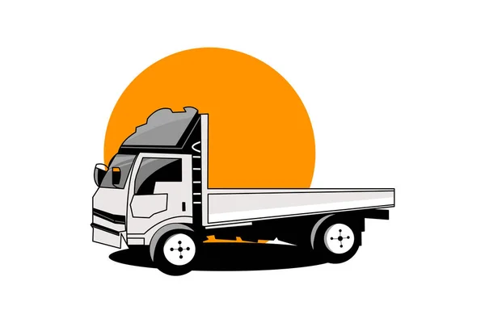

<div class="container">
<ion-content [fullscreen]="true">
  
<!-- <ion-button>Get started</ion-button>
-->
<!-- <ion-fab>
  <ion-fab-button>
    <ion-icon name="chevron-forward"></ion-icon>
  </ion-fab-button>
</ion-fab> -->
<h2>welcome to app</h2>

</ion-content>
</div>
<ion-fab vertical="bottom" horizontal="end" style="margin-right: 20px;margin-bottom: 15px;" >
  <ion-fab-button [routerLink]="['/login']">
  <ion-icon name="chevron-forward"></ion-icon>
</ion-fab-button>
</ion-fab>
